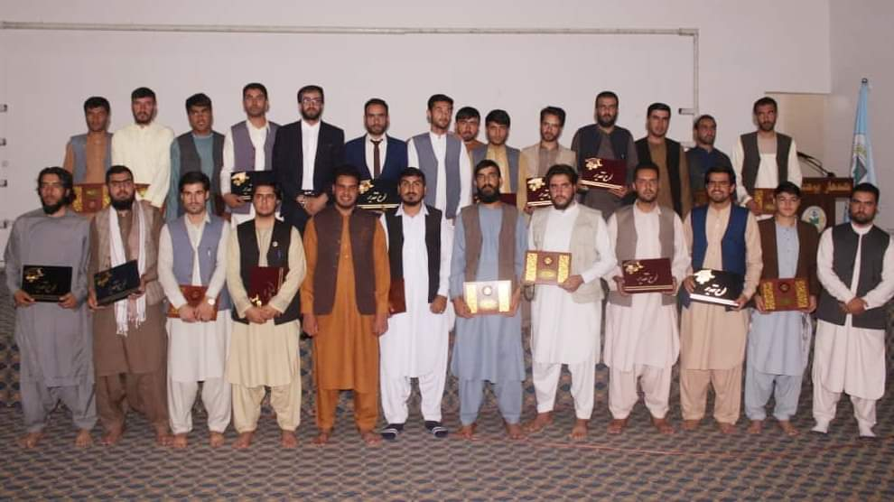

این اتحادیه شامل اعضای۱۳ نفري تصمیم گیرنده می باشد همچنان داري یک ریس و یک معاون و یک منشی می باشد و داري ۵ کمیته می باشد هر کمیته ان داري ۵ اعضاي دیگر می باشد کمیته هاید ان عبارتند از « کمیته نظارت کمیته ورزشی کمیته مالی و اداری کمیته ارتباطات عامه و کمیته علمی و فرهنگی » این اتحادیه سال یک بار انتخابات برای تعین ریس جدید برگذار میکند . شرایط عضویت این اتحادیه : شرایط عضویت این اتحادیه به دو قسم است ۱: باید محصل پوهنتون قندهار باشد ۲: به حیث کارمند افتخاري برای پشرفت این اتحادیه هر افغان میتواند عضویت این اتحادیه را داشته باشد .
اتحادیه محصلین پوهنتون قندهار در سال ۱۳۹۶ هـ خورشیدي توسط نماینده گان محصلین ۳۴ ولایت افغانستان در پوهنتون قندهار تاسیس شد این اتحادیه به رهبری پوهنمل فیض الله قاضي زاده در یک محیط اکادمیک تاسیس شد . هدف این اتحادیه حل مشکلات محصلین ارتقای ظرفیت محصلین و همسان سازي پوهنتون قندهار با تمام پوهنتون های داخلی و خارجي می باشد
